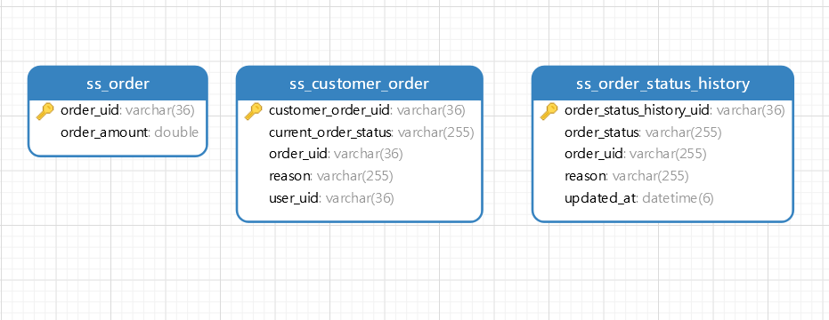

Creating order-service.
In the user-service we have to use additional dependencies than the eureka service. because in the user-service we want to access the database as well. therefore, we use spring boot jpa with mysql dependencies.
- spring-boot-starter-actuator
- spring-boot-starter-web
- spring-cloud-starter-netflix-eureka-client
- spring-boot-devtools
- lombok
- spring-cloud-starter-openfeign: The rest client for http
Same as th before, open the project with your favourite IDE. the order service is the service that is the starting point of the place order process.
let's implement step by step.
Configure the configuration
order-service > src/main/resources/application.ymlAnnotate the server as a eureka-client and enable feign-client
Database for order-service
Creating the entity classes according the order-service-db tables
Order.class (for ss_order table)
order-service > src/main/java/org/mono/stacksaga/example/orderservice/entity/Order.javaCustomerOrder.class (for ss_customer_order table)
order-service > src/main/java/org/mono/stacksaga/example/orderservice/entity/CustomerOrder.javaOrderStatusHistory.class (for ss_order_status_history table)
order-service > src/main/java/org/mono/stacksaga/example/orderservice/entity/OrderStatusHistory.javaCreating repositories for each entity classes
OrderRepository.class
order-service > src/main/java/org/mono/stacksaga/example/orderservice/repository/OrderRepository.javaCustomerOrderRepository.class
order-service > src/main/java/org/mono/stacksaga/example/orderservice/repository/CustomerOrderRepository.javaOrderStatusHistoryRepository.class
order-service > src/main/java/org/mono/stacksaga/example/orderservice/repository/OrderStatusHistoryRepository.javacreating the services for execute the business logics
You know already about the design pattern we normally use in spring boot project. it is controller
> service > repository but here we have divided the service layer into two parts called
internal-services and external-services upon the usage (accessing) of resources
for operations.
- Internal-services - all services which access local repositories or local supportive services for their operations
- External-services - all services which access external endpoints or external services for their operations

InternalCustomerOrderService.class
Due to the accessing their own repositories to process the operations the CustomerOrderService is an internal service. For convenience, we use a prefix for the class name as Internal.
CustomerOrderService has two methods for creating the order and update the order after creating the order. in the next step the service class will be accessed by the controller class to place the order.
order-service > src/main/java/org/mono/stacksaga/example/orderservice/service/internal/InternalCustomerOrderService.javanow we have completed 1st step and 5th step of the place order process. those processes are processed by using internal resources. The current status of the flow like below.

next we are going to implement the step of the flow called check-user. the check user process is proceed from the user-service (external). but the user-service hasn't been implemented yet. even though, we are going to implement the rest-client part of accessing user-service, inside the order-service by imagining the rest-endpoint already implemented. (in the few next steps, the user-service is created)
creating user service access class
before creating the user service we have to create the response body DTO.
UserIsActiveResponseBody.class
next we are going to create the external user service by using the dto that we created above.
ExternalUserService.class
due to the accessing the data from external service, the ExternalUserService is created at the external-service package. The ExternalUserService is a feign-client bean. the bean will make a request to the user-service by the URL that we provided and pass the response as the return when we call the method. if you are not familiar with feign-client, please refer this. or alternatively you can use spring rest-template as well.
order-service > org/mono/stacksaga/example/orderservice/service/external/ExternalUserService.javanow we have completed 1st, 2nd step and 6th step of the place order process.

Creating payment service access class
before creating the user service we have to create the response body and request body DTOs to communicate with the user microservice using http protocol.
MakePaymentRequestBody.class
order-service > org/mono/stacksaga/example/orderservice/dto/MakePaymentRequestBody.javaMakePaymentResponseBody.class
order-service > org/mono/stacksaga/example/orderservice/dto/MakePaymentResponseBody.javanext we are going to create the external user service by using the DTOs that we created above.
ExternalPaymentService.class
Next we are going to implement the step of the flow called make_payment. the make payment process is proceed from the payment-service (external). but the payment-service hasn't been implemented yet. even though, we are going to implement the rest-client part of accessing payment-service, inside the order-service by imagining the rest-endpoint already implemented. (in the few next steps, the payment-service is created)
order-service > org/mono/stacksaga/example/orderservice/service/external/ExternalPaymentService.javanow we have completed 1st, 2nd , 3rd and 6th steps of the place order process.

Creating user point service access class
ExternalUserPointsService.class
order-service > org/mono/stacksaga/example/orderservice/service/external/ExternalUserPointsService.java
Creating delivery service access class
before creating the user service we have to create the response body and request body DTOs to communicate with the user microservice using http protocol.
AddToDeliverRequestBody.class
order-service > org/mono/stacksaga/example/orderservice/dto/AddToDeliverRequestBody.javaAddToDeliverResponseBody.class
order-service > org/mono/stacksaga/example/orderservice/dto/AddToDeliverResponseBody.javaExternalDeliveryService.class
order-service > org/mono/stacksaga/example/orderservice/service/external/ExternalDeliveryService.java
now we have successfully created all external and internal access service classes. now we are going too to use those services to place the order process and create the endpoint in the order-service.
Creating the controller and endpoint
This is the time to create the endpoint (controller) for place order. but before creating the controller, we have to create the DTOs fore place order response and place order request.
PlaceOrderRequestBody.class
The data transfer object for place order request. (RequestBody)
order-service > src/main/java/org/mono/stacksaga/example/orderservice/dto/PlaceOrderRequestBody.javaPlaceOrderResponseBody.class
The data transfer object for place order response. (ResponseBody)
order-service > src/main/java/org/mono/stacksaga/example/orderservice/dto/PlaceOrderResponseBody.javaOrderController.class
by using the response body and request body object classes, the controller class will be created like below.
order-service > org/mono/stacksaga/example/orderservice/controller/OrderController.javahere, we have implemented all process that we want to process the place-order inside
order-service.
now you can run
the project. but you can't call the endpoint localhost:8080/order-service/place
cause the other microservices haven't been implemented yet. in the next few steps, we are going
to implement all other microservices.
So far, The order-service's project file structure will be like below
└───main
├───java
│ └───org
│ └───mono
│ └───stacksaga
│ └───example
│ └───orderservice
│ │ OrderServiceApplication.java
│ │
│ ├───controller
│ │ OrderController.java
│ │
│ ├───dto
│ │ AddToDeliverRequestBody.java
│ │ AddToDeliverResponseBody.java
│ │ MakePaymentRequestBody.java
│ │ MakePaymentResponseBody.java
│ │ PlaceOrderFailedResponseBody.java
│ │ PlaceOrderRequestBody.java
│ │ PlaceOrderSuccessResponseBody.java
│ │ UserIsActiveResponseBody.java
│ │
│ ├───entity
│ │ CustomerOrder.java
│ │ Order.java
│ │ OrderStatusHistory.java
│ │
│ ├───repository
│ │ CustomerOrderRepository.java
│ │ OrderRepository.java
│ │ OrderStatusHistoryRepository.java
│ │
│ └───service
│ ├───external
│ │ ExternalDeliveryService.java
│ │ ExternalPaymentService.java
│ │ ExternalUserPointsService.java
│ │ ExternalUserService.java
│ │
│ └───internal
│ InternalCustomerOrderService.java
│
└───resources
│ application.yml
│
├───static
└───templates
Example series
-
Microservice example without using StackSAGA (Imperative way)
-
Microservice example by using StackSAGA (Imperative way).